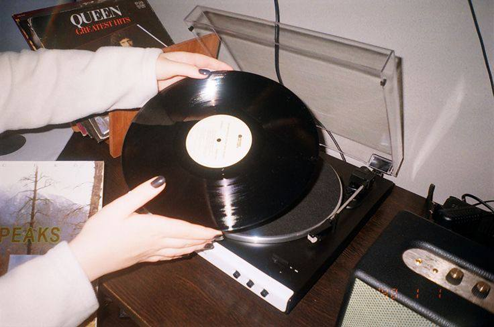
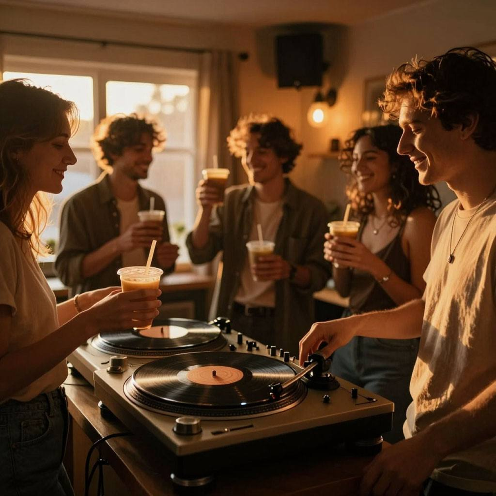

В последние годы растёт интерес к виниловым вечеринкам, камерным диджей-сетам и утренним рейвам с кофе. Люди достают проигрыватель, собираются в кофейнях или дома и слушают музыку. Причина простая — усталость от цифрового шума и перегрузки контентом. В статье разберём, почему винил снова популярен, как диджеи создают уникальные сеты и чем отличаются разные форматы тусовок.

Н1: Почему на камерных вечеринках играет винил, а утренние рейвы снова в тренде?
Н2: С чем связан рост популярности виниловых вечеринок
Винил возвращается: увеличивается число коллекционеров, открываются магазины пластинок, проводятся камерные мероприятия. Этот тренд заметен не только по продажам винила, но и по растущему интересу людей в соцсетях, на мероприятиях. Формат пришёл из Италии, Польши, Германии, где начали развиваться небольшие музыкальные события с акцентом на звук и атмосферу. В Европе сформировался подход, близкий к замедлению жизни — прослушивание музыки без спешки. Люди выбирают меньше шума и небольшие компании, чтобы сосредоточиться на самом процессе.
НЗ: Роль диджея на современных тусовках
Диджей на виниле управляет музыкой напрямую: вручную выбирает треки, ставит иглу звкуоснимателя и сводит композиции вручную. Каждая виниловая вечеринка уникальна, потому что музыка формируется в моменте, под конкретную атмосферу, а диджей ориентируется исключительно на слух.
Кроме того, работа диджея отличается: в клубах он играет более быстрые сеты с акцентом на ритм и танцпол, а в небольших пространствах уделяет больше внимания выбору треков и плавным переходам между ними.
Н2: Тренд на осознанность в музыкальной индустрии
Ещё один важный фактор — тренд на осознанность. Растёт популярность офлайн-прослушивания треков. Это связано с желанием зумеров сосредоточиться на музыке без цифрового шума и вернуться к более «аналоговым» способам взаимодействия с контентом.
Проблема цифровой эпохи — переизбыток информации: миллионы треков, бесконечный скроллинг, отсутствие фокуса. Винил же работает наоборот: ты выбираешь один альбом и слушаешь его целиком, проживаешь музыку.
НЗ: В чем разница атмосферы клуба и виниловых вечеринок
В клубах и на камерных тусовках разный формат восприятия музыки. В клубе зал заполнен людьми, светом, внимание рассеивается, музыка становится шумом.
На виниловых вечеринках или в кофейнях, акцент смещается на само прослушивание. Здесь проще сосредоточиться на треках, услышать детали и познакомиться с людьми с похожими интересами, которые ценят эту атмосферу.
Н2: Утренние рейвы: новый формат тусовок без алкоголя
Отдельный тренд — утренние рейвы, которыми интересуются многие.
Первые такие тусовки запустили проекты Morning Gloryville и Daybreaker в Великобритании и США в середине 2010-х. Вечеринки начинались в 6 утра, с йоги и танцев, а заканчивались кофе, чаем или смузи с видом на город.

Формат быстро распространился из Лондона в Нью-Йорк и Торонто.
В России утренние рейвы появились в конце 2024 года: первые кофе-вечеринки прошли в Москве в кофейнях Coffee Flight и Rockets Concept Store. Уже к 2025 году формат стал регулярным и распространился на Санкт-Петербург, Сочи, Казань и другие города. Утренние тусовки часто проводятся в Cups, Naomi Bistro, Rockets Concept Store и Coffee Flight.
НЗ: Отличия утреннего и вечернего рейвов
Утренние рейвы проходят днём в кофейнях или небольших пространствах и относятся к формату вечеринок без алкоголя, лёгкой музыкой и спокойной атмосферой.
Вечерние рейвы проходят ночью в клубах, это более масштабные пати с громкой музыкой и интенсивной атмосферой. Поэтому люди всё чаще выбирают альтернативные тусовки с более комфортным ритмом.

Н2: ИТОГ
Интерес к камерным форматам остаётся высоким. Он показывает, что современные мероприятия могут быть спокойными, осознанными и удобными. Музыка через проигрыватель и музыкальный центр с винилом, комфортная атмосфера и небольшие компании делают досуг приятным и полезным. Виниловые и кофе-вечеринки уже становятся частью повседневной культуры.